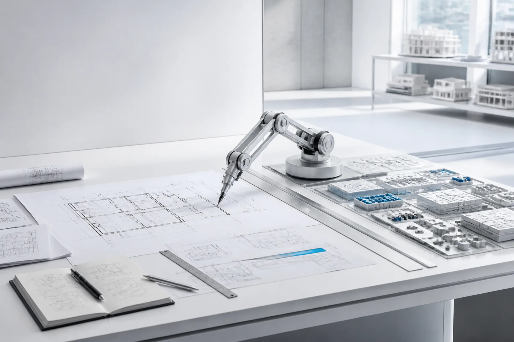
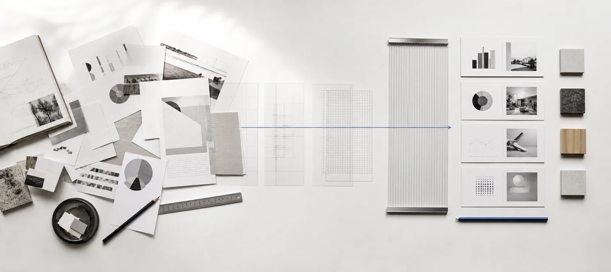
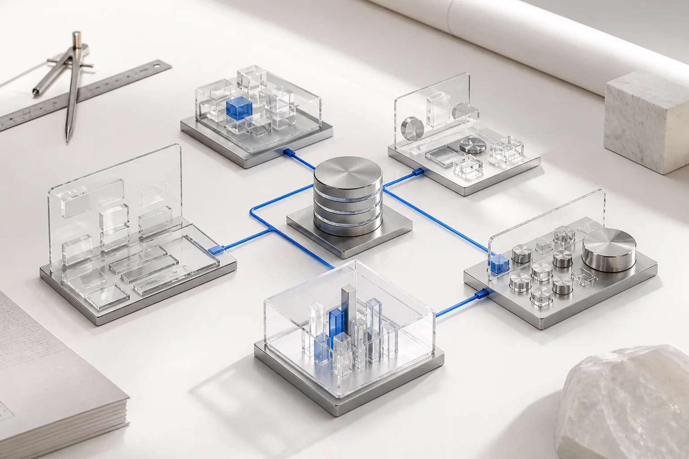
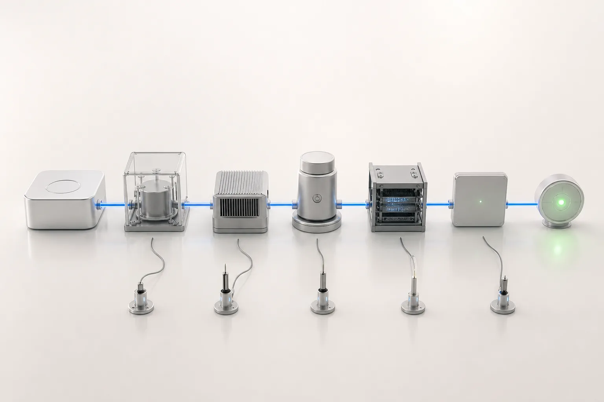
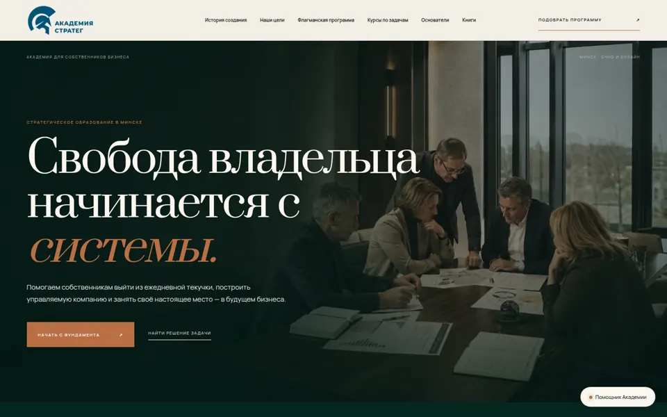
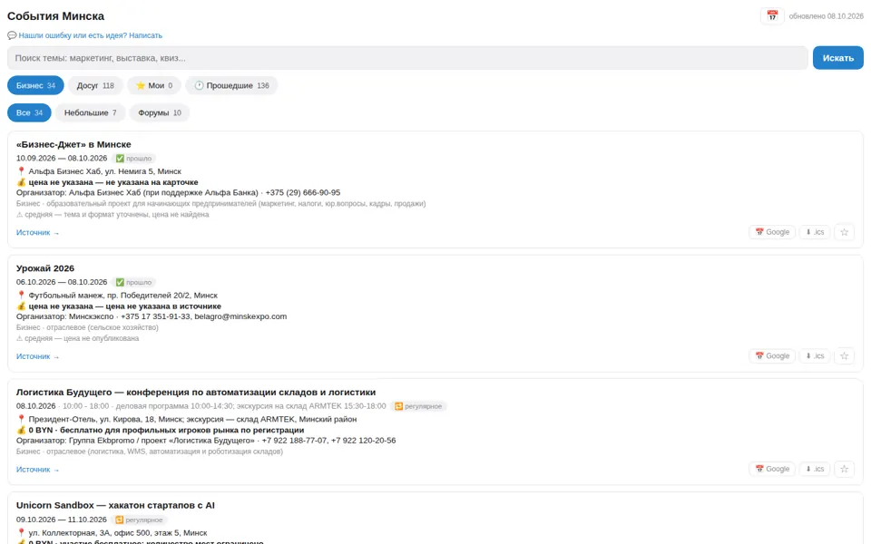
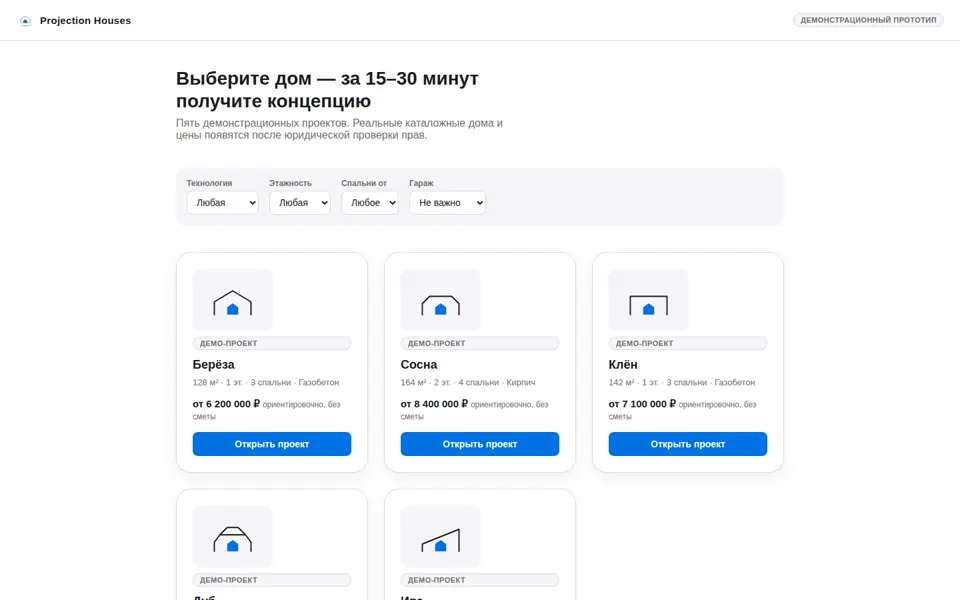
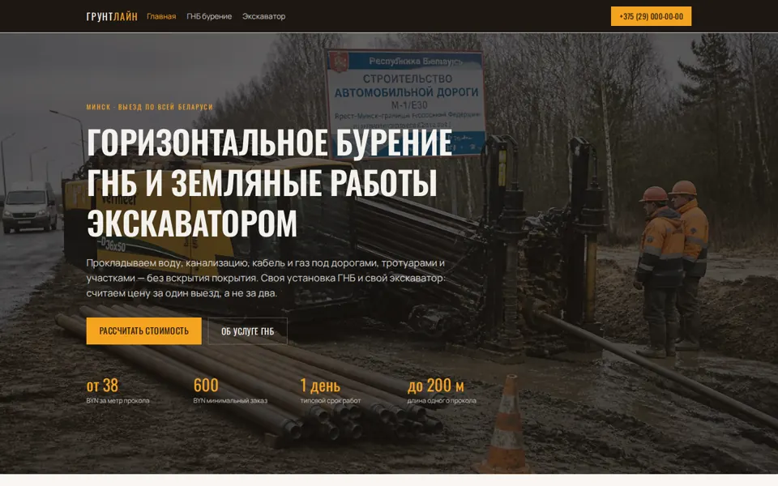

01
Исследуем
Находим настоящую задачу.
Изучаем контекст, процессы, аудиторию и ограничения. Решение начинается с точной постановки, а не с первого пришедшего инструмента.
Исследование · анализ · память
Automation Studio Creative
AI-архитектор исследует задачу, создаёт точный цифровой проект и собирает работающую систему.
Посмотреть подход ↓Архитектура решения
AI-архитектор работает не с отдельной кнопкой или текстом, а со всей траекторией бизнеса: исследует контекст, проектирует связи и доводит решение до запуска.

Сначала собираем факты, ограничения и реальные задачи. Затем отделяем сигнал от шума.
Изучаем контекст, процессы, аудиторию и ограничения. Решение начинается с точной постановки, а не с первого пришедшего инструмента.
Исследование · анализ · памятьСвязываем стратегию, интерфейс, данные и автоматизацию в понятную схему. Каждому элементу назначаем роль и критерий проверки.
Стратегия · архитектура · дизайн
Разрабатываем, интегрируем и тестируем весь путь. На выходе — не презентация идеи, а работающий цифровой инструмент.
Разработка · интеграции · контроль
Практика ASC
Показываем только то, что уже работает или находится в содержательной разработке.
Образование и продажи
31-страничный сайт действующего образовательного бизнеса связан с системой лидогенерации: заявки из нескольких источников поступают через n8n в amoCRM, сохраняют UTM-атрибуцию, запускают уведомления и попадают в ежедневную статистику воронки.
Открыть сайт ↗
Мониторинг и Telegram Mini App
Система собирает, проверяет, дедуплицирует и классифицирует события Минска. В мини-приложении доступны поиск, фильтры, избранное и экспорт в календарь; данные обновляются и публикуются автоматически.
Открыть приложение ↗
Образовательные продукты
Один проектный кейс в трёх вариантах — с разным визуальным языком, сценарием подачи и интерактивностью. От смысловой системы до игровой механики и живой тетради.
PropTech · BIM
Каталог и UX-прототип системы параметрического проектирования частных домов: планы, фасады, 3D и ориентировочная стоимость. Архитектурное ядро — контейнер .phouse поверх IFC.

B2B-разведка
Переносимый движок получает закупочные данные через API, фильтрует по региону, ключевым словам, ОКПД2 и сумме, затем ранжирует потенциальные лиды. Первый проверочный прогон: 42 лида, 8 высокой релевантности.
Закрытый проект · демонстрация по запросуДополненная реальность
ARCore-прототип привязки цифрового контента к реальным объектам без дорогой 3D-модели мира. Одно ядро для AR-рекламы, товарной информации и навигации.
Закрытый MVP · демонстрация по запросуКаталог услуг
Сайт услуг ГНБ и земляных работ: техника, характеристики, открытые цены и прямой путь к расчёту стоимости.
Открыть проект ↗
Связанная архитектура
Сайт, Telegram, MAX и звонки сходятся в одну очередь. Система фиксирует источник, создаёт контакт и сразу назначает ответственного.
AI-агент уточняет задачу, отвечает на типовые вопросы и передаёт менеджеру уже собранный контекст. Срочные обращения поднимаются выше.
Единые этапы, обязательные данные и автоматические задачи заменяют хаотичные карточки. Руководитель видит зависшие сделки и реальную загрузку.
Заявка сохраняет свой источник до продажи. Дашборд показывает стоимость лида, конверсию, окупаемость каналов и прогноз выручки.
Принципы работы
Безопасную задачу выполняю, проверяю и показываю результат.
Проверяю источники и честно обозначаю неопределённость.
Публикации, платежи и необратимые действия выполняются только после подтверждения.
Сохраняю решения и предпочтения, чтобы точнее работать дальше.
Начать проект